The MAF, infamous for its failures.
The MAF (Mass Air Flow sensor) is oftern blamed for giving false readings,
resulting in poor running, backfiring and lack of performance. The MAF here
is a Bosch MAF it works by measuring the volume of air passing and the
temprature, hence giving the engine management system the density of
air entering the engine. This is then used to work out the timing & amount of
fuel to inject. *
*Please correct me if wrong.
Note: This guide was created with a 98 V6 156, the process may differ in other models
The problem:The car has lack luster performance and/or is misfiring, but no injector warnig light on.
Prep:Tools and parts
Tools required...
Torx screwdrivers. T-20H Security bit
Slot screwdriver - long.
Pliers
Glass cleaner.
Isoproply Alcohol
Lint free, solvent free wipes
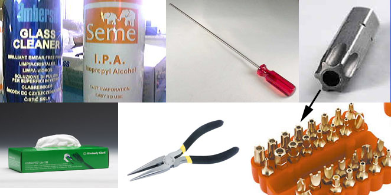
Link to Buy Torx Bits
1:Open the bonet and look down.
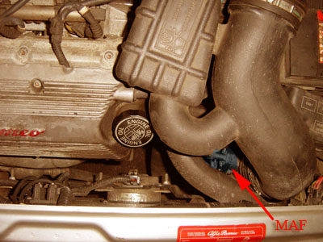
2:The MAF close up.
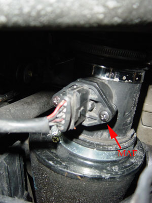
3:Removal: Remove screws & clip
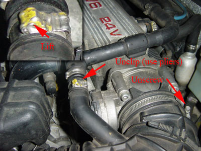
4:Removal: Remove screw. This requires inserting the long screwdriver through the
vent at the front of the car, along the green line.
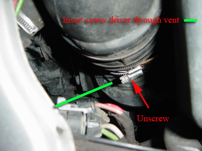
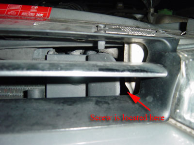
5:Removal: You can now pull out the MAF plug from the unit.
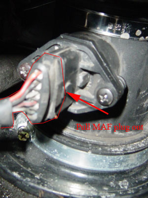
6:Removal: You can now lift out the airbox & MAF
{excuse the poor quality image}
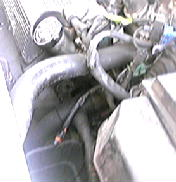
7:Take the whole unit inside where its nice and warm
You can now see the Torx Security screws that hold the unit in place.
{excuse the poor quality image}
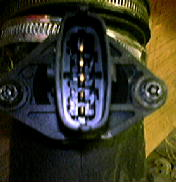
8:This is where you can use the T-20H Trox screw bit to remove them.
If that failures, then you can try to snap the pin in the middle of the screw and use a normal Trox bit
If that failures, then you can dremil the middle of the screw out and use a normal screw driver*
If that failures or you don't fancy it, then you can try my way...
* This may not be wise, due to vibrations damaging the MAF
My way: locate the following part in the Torx tool kit.
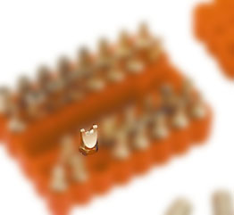
This can be inserted in to the Torx screw.
If still having trouble, then get a mate with some pliers to grip the head of the screw and
turn at the same time.
This should release the Torx screws.
9:BEHOLD!! The MAF unit
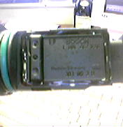
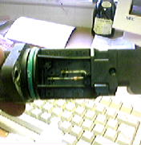
10:To clean the MAF you can spray some Isoprophylalcohol into the bottom of the unit.
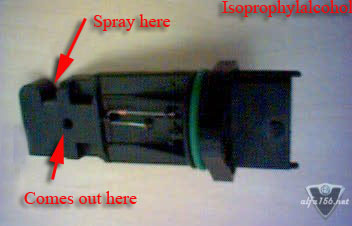
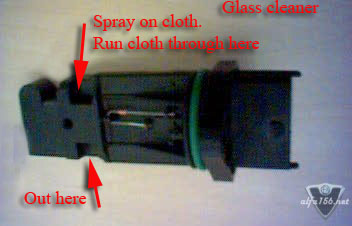
Now wait for it to dry.
11:Replacement Screws: I found two screws in my screw box of the same diameter,
but they needed some reduction in length.
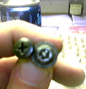
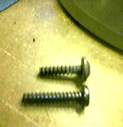
Now find a nice chap with a dremel and ask him to cut down the screws.
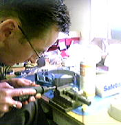
Just remember these newly cut screws will be very hot!
Don't pick them up or try to screw MAF back in with them straight way,
you'll just fuse the MAF to the housing.
12:Screw the MAF back in, then go outside and re-assemble the whole thing.
Sorry no pics of this, but its the reverse of taking the unit out.
13:Plug in the MAF unit, just incase you forgot.
Again, no pic, but you can see above what it looks like pluged in.
If you did start the car without it plugged in, don't worry.
The injector warning light will go off once you've plugged it in.
Just remember to turn the car off before pluging it in.
13:Now you can either let the car relearn the correct air/fuel settings over time,
this may take a few 100 miles. Or..
You can disconnect the battery.
ONLY IF YOU HAVE THE STEREO CODE
Otherwise you'll not be able to user the stereo until you obtain the code from an agent.
If you don't have the code, then you can probably use the ignition trick.
Turn key to MAR1 (position before the engine starts)
Wait 90 seconds.
Turn key to off.
Wait 90 seconds.
Start engine, let idle for 15 min.
Take car out and give it a good thrashing for 15 min.
If you do want to disconnect that battery, then...
Disconnect the battery, only one connector needs to be removed
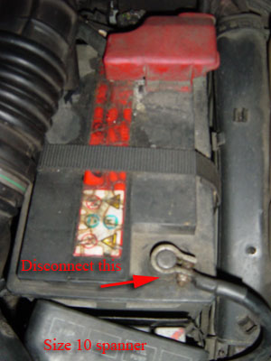
Wait 10 minutes
Start engine, let idle for 15 min.
Take car out and give it a good thrashing for 15 min.
14:Thats it, you've now changed your MAF.
The car should now run much smoother.
15:Go for a beer!!
I did!
I hope this helps some of you out.
- alfa156.net - jeff_porter.
Thanks to my Dad & Carl for there help.